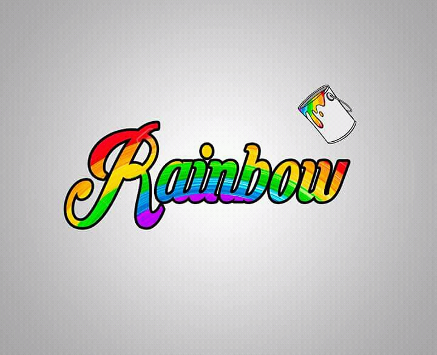
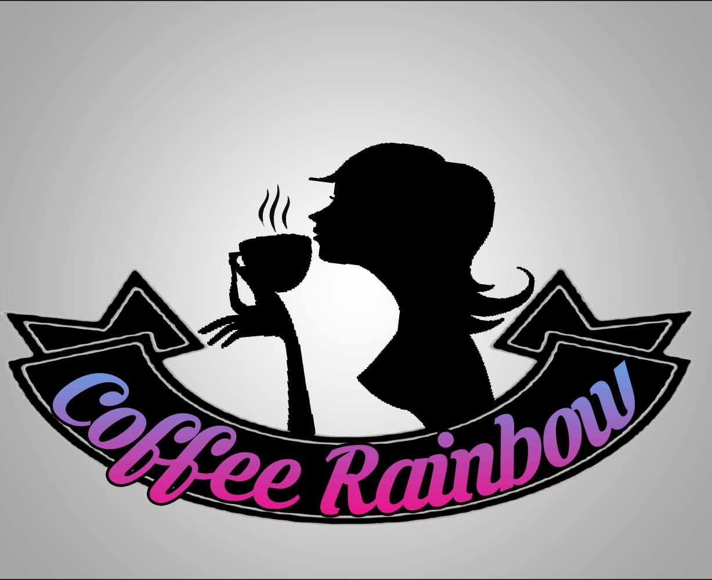

CAPACITADORES DE DISEÑO GRAFICO
DROCOM es un grupo de capacitadores de software del aplicacion de diseño grafico que son Adobe Photoshop e Adobe Illustrator con el objetivo de instruir a las personas micro empresarias y empresas emprendedoras que logren realizar sus
propios diseños sin la necesidad de contratar un disñador profesional ya que algunas empresas o microempresarios no
tienen recursos necesarios para contratar diseñadores.
El nombre del grupo de capacitadores DROCOM se debe ya que son las iniciales de los integrantes del grupo de proyecto.
-


Nosotros les brindaremos los principales programas de edición profesionales y con nuestras capacitaciones puedan aprender cómo crear su logo, banner, tabloides, camisetas, etc.
Este proyecto es algo que nos sirve para dar conocer algunos programas de edición como Photoshop y Illustrator y con los mismos programas poder hacer proyectos de empresas y personas que quieren aprender a editar o dibujo vectorial ya de
forma profesional
Adobe Illustrator es una aplicación informática dedicada al dibujo vectorial y al diseño de elementos gráficos casi para cualquier tipo de soporte y dispositivo, pudiendo ser usado tanto en diseño editorial, dibujo profesional, maquetación web, gráficos para móviles, interfaces web, o diseños cinematográficos.
Adobe Photoshop es un editor de gráficos desarrollado por Adobe Systems Incorporated y utilizado principalmente para el retoque de fotografías y gráficos. Traducido al español significa “taller de fotos” y es el líder mundial dentro del mercado de las aplicaciones de edición de imágenes en general.
Es desarrollado y comercializado por Adobe Systems Incorporated en sus inicios para sistemas de Apple, pero posteriormente también para sistemas operativos de Windows. Su lanzamiento inicial fue en febrero de 1990 y su distribución viene presentada de manera diferente e individual hasta crear un paquete de programas: Adobe Creativa Suite Design Premium y versión Standard, Adobe Creative Suite Web Premium, Adobe Creative Suite Production Studio Premium y Adobe Creative Suite Master Collection.